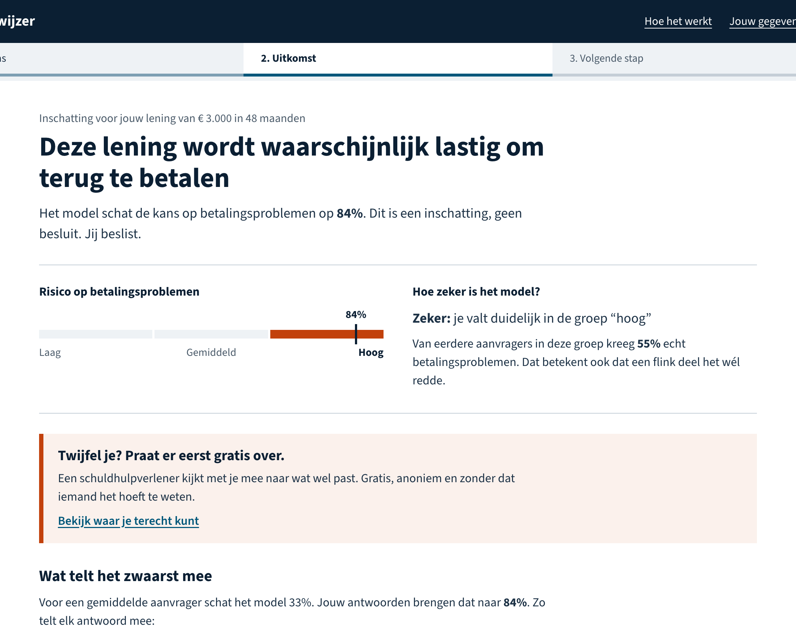
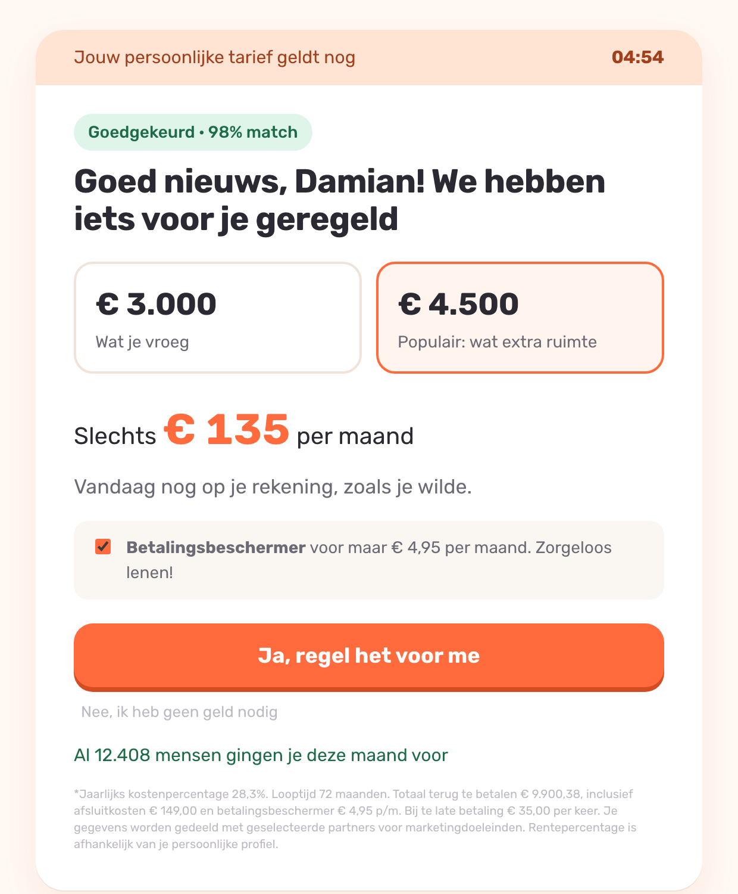
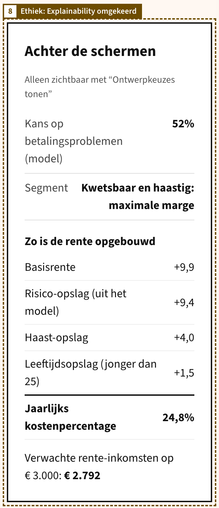

Data en model
De voorspelling
German Credit: 1000 Duitse leningen uit de jaren ’70, bij 30% ging het mis. Een monotoon neuraal netwerk voorspelt de kans op betalingsproblemen. Meer spaargeld of een kortere looptijd kan de kans nooit verhogen: domeinkennis als harde regel.
Recall boven precision: een gemist risico kost Damian jaren schuld, een vals alarm een gesprek. Daarom drie groepen, op recall gekozen:
| Groep | Kans | Kreeg echt problemen |
|---|---|---|
| Laag | < 15% | 9% |
| Gemiddeld | 15 tot 40% | 27% |
| Hoog | > 40% | 56% |
Design thinking: persona en empathy map
Damian, 24
“Ik regel het liever zelf. En het liefst snel.”
Automonteur, één jaar in dienst, huurt een kamer, weinig spaargeld, al een afbetaling bij een winkel. Zijn auto is kapot en de bank zei nee.
| Empathy map | Schuldwijzer | SnelGeld |
|---|---|---|
| Voelt schaamte | anoniem, geen oordeel | “bij ons niet afgewezen” |
| Tijdsdruk | 10 vragen, direct resultaat | aftelklok, haast-opslag |
| Kijkt naar maandbedrag | kans, marge, N van 100 | totaal in kleine letters |
| Snapt afwijzing niet | uitleg per antwoord | “98% match” |
Het model: 75% kans op problemen (Schuldwijzer), 52% (SnelGeld, ander profiel en meer kenmerken).
Design thinking: user scenarios
Zelfde start, ander einde



Kritisch stelling nemen
De drie AI-ethische risico’s in beide ontwerpen
| Risico in deze context | Schuldwijzer beschermt | SnelGeld buit uit | Nuance | |
|---|---|---|---|---|
| Privacy | Financiële data verraadt precies wie wanhopig is, en dat is geld waard. | Dataminimalisatie: 10 vragen, uitleg per vraag, antwoorden nergens opgeslagen, alles wissen. Kost vrijwel geen nauwkeurigheid (cv-AUC 0,78 met 10, 0,80 met 20 features). | 20+ vragen plus naam, e-mail, telefoon die het model niet gebruikt. Toestemming voor contacten en delen vooraf aangevinkt. Verwijderen alleen per telefoon. | Ook Schuldwijzer stuurt antwoorden naar een server om te rekenen, en een vrije feedbacktekst kan persoonsgegevens bevatten. Daarom expliciet in de app wat er bewaard wordt. |
| Bias | In de data kwamen vrouwen (35% vs 28%) en jongeren (42% vs 27%) vaker in de problemen. | Geen geslacht, leeftijd of nationaliteit; ook geen kredietverleden (werkt omgekeerd door selectiebias). Gemeten op alle 1000: vrouwen 35% vs mannen 31% in “hoog”, vals alarm gelijk (20% vs 21%). | Gebruikt alle beschermde kenmerken, plus een opslag voor jongeren en buitenlandse nationaliteit. Vrouwen 40% vs mannen 28% in “hoog”, vals alarm 25% vs 18%. | Proxy-bias blijft bij leeftijd: jongeren krijgen vaker onterecht een waarschuwing (26% vs 20%; SnelGeld 32% vs 18%). Te verdedigen omdat de app niets weigert, maar het ontmoedigt onnodig. |
| Explainability | Een kredietoordeel zonder uitleg kun je niet controleren, verbeteren of aanvechten. | Monotoon netwerk: geen onlogische uitkomsten. Per antwoord het effect in procentpunten; alternatieven die nooit een langere of duurdere lening aanraden. | “Slimme AI” als verkooppraatje, 3 seconden nep-wachttijd, de echte kans verzwegen en omgezet in rente. | Logistische regressie is bijna even goed én volledig doorzichtig: onder de AI Act een serieus argument. Wij kozen de gegarandeerde logische richting. |
UX van AI
De 7 AI-UX-aandachtspunten (plus confidence en data privacy uit de rubric)
| Schuldwijzer zet in | SnelGeld misbruikt | |
|---|---|---|
| 1 Set expectations | Voordeel vooraf: “weet voordat je leent” | “Binnen 10 sec goedgekeurd, iedereen welkom” |
| 2 Onboarding | Eerst kijken met voorbeeld Damian | Lokkertje “vanaf € 51”, voortgang “80%” |
| 3 Transparency & limitations | Model, data en grenzen; “laag is geen garantie” | “Slimme AI” zonder uitleg, kosten in kleine letters |
| 4 Explainability | Shapley per antwoord plus alternatieven | Voorspelling verborgen, omgezet in rente |
| 5 Control | Zelf schuiven, alternatieven, “jij beslist” | Hoger bedrag en extra’s standaard aan, aftelklok |
| 6 Feedback | “Herken je je hierin?” plus wat we ermee doen | Vijf sterren vooraf ingevuld |
| 7 Alerting | Doorverwijzing naar gratis hulp bij hoog risico | “Aanbod verloopt over 04:59” |
| Confidence | Kans, marge en “70 van de 100” | Nep-zekerheid “98% match” |
| Data privacy | 10 vragen, uitleg per vraag, wissen | Opt-out, doorverkopen, niet weg kunnen |
In beide apps markeert Ontwerpkeuzes tonen elk punt op het scherm, en bij elk dark pattern welke richtlijn het misbruikt.
Onze stellingname
Een voorspelling over iemands kwetsbaarheid is macht. Gebruik haar in het belang van wie het betreft, en laat die persoon zien wat er voorspeld wordt.
- Wie profiteert? Bescherming of marge.
- Wie weet wat? Uitleg delen of informatie-asymmetrie uitbuiten.
- Wie beslist? “Jij beslist” of tijdsdruk en standaardkeuzes.
Ook goed ontwerp kan schaden. In “laag” komt 1 op de 11 toch in de problemen (valse geruststelling), in “hoog” redt 44% het wél (onnodig ontmoedigen). Daarom blokkeert Schuldwijzer niets en toont het de marge. Wettelijk maximum in Nederland: 12% rente (sinds 1 januari 2026); SnelGeld rekent tot 29,9%. De verantwoordelijkheid ligt bij wie bepaalt wat er met de voorspelling gebeurt.